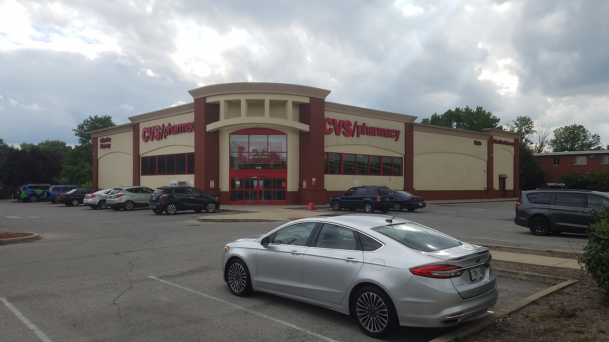

Vol. I · No. 161 · Thursday, November 5, 2026 · 14 items · 9.8 min read
CVS undoes its own empire, oil sheds a war premium on the midterm rebuke, Treasury drops two words, and Weil’s wind-down becomes a fight over what is left.
Markets & Deals · New York
CVS will split in two by 2028, unwinding the Caremark and Aetna build

A CVS store in Beech Grove, Indiana. The drugstores become their own public company. deathpallie325 / Wikimedia Commons
CVS Health said Wednesday it will separate into two independent, publicly traded companies by the first half of 2028, pulling its Aetna insurer and pharmacy benefit manager apart from its roughly 9,000 drugstores. CNN called it a major breakup of a $117 billion healthcare empire. The shares, up about 15 percent this year, fell 10 percent in early trading, CNN reported.
“We’re basically taking what I believe is one great company and making it two.”
David Joyner, CVS chief executive, via CNN, Nov. 4
The company keeping the CVS Health name takes , Caremark, CVS Specialty, Oak Street Health and Signify Health, with David Joyner as chairman and chief executive. CVS Pharmacy takes the stores, mail pharmacy, and Health100, a technology unit Joyner called “connective tissue” between the two, under . Shareholders would own both, in a separation CVS intends to be for federal income tax purposes.
The plan reverses a strategy built through the 2007 Caremark merger and the $69 billion Aetna purchase in 2018. “Now is the time because we are not doing anything out of a distressed decision,” Joyner said on the earnings call. Third-quarter revenue rose 5.4 percent to $108.4 billion, adjusted earnings were $2.09 a share, and full-year guidance rose to at least $8.20. CVS leaders said the split “does not stem” from regulatory issues, though Sens. Elizabeth Warren and Josh Hawley introduced the Break Up Big Medicine Act in February. Forrester’s Arielle Trzcinski warned that if the split creates more handoffs, “consumers will bear the cost of that complexity.”
News · Tehran and Washington · cross-spectrum: LLCR
Brent falls 8.7% to $94.62 as traders bet the midterms end the Iran war, and Trump keeps every option open
Oil settled at its lowest since Aug. 31 on Wednesday, Reuters reported. Brent fell $8.98, or 8.7 percent, to $94.62, and West Texas Intermediate fell 8.3 percent to $88.12, as investors bet that Democratic control of Congress could hasten the end of the war. Trump told the Financial Times on Tuesday that the United States had “no immediate plans to strike Iran.” Brent was up 0.9 percent at $95.56 early Thursday.
Vice President Vance wrote, “The reason we lost is the war.” Axios, relayed by Iran International, reported three options before Trump: strikes, a deal or a squeeze. Vance leads the group favoring a deal, while favor blockade and pressure. Enverus’s Carl Larry was unpersuaded by the rally: “I’m more concerned that we can see an escalation in Iran sooner than a resolution.” averaged 17.1 million barrels a day in October, about three-quarters of prewar levels. A senior Iranian official said Tuesday the two sides “remain far from a deal.”
Law · New York
Former Weil partners hire a litigator as Gibson Dunn talks to as many as 120 Weil lawyers
About 10 former Weil partners have hired Foley & Lardner litigator Peter Wang, Above the Law reported Wednesday, citing the Financial Times. None of them left in this year’s exits. The group is examining whether and firm management breached fiduciary duties at the end of the firm’s run. Equity is paid only if something remains after the wind-down.
Gibson Dunn is in talks for up to 120 lawyers in the U.S. and London, more than 20 of them partners, including private funds heads Andrew Chizzik, James Bromley and James Sargent. Neither firm commented. Bloomberg Law put Ramona Nee’s Kirkland group at 40 or more, while Law.com said about 20. AI-native firms are also bidding for talent and intellectual property, Artificial Lawyer reported. This paper found no report of a partner vote.
AI
The token budget arrives
AI · Cupertino and Sydney
Apple cuts engineers’ AI budgets as Canva lays off 22% and blames its forecast on AI costs
Apple cut its daily AI spending cap for engineers from $300 to $200 in October, with some falling to $100 and non-engineers possibly as low as $25, TechCrunch reported, citing Bloomberg. laid off 1,271 people, or 22 percent of staff, and cut its growth forecast from 30 percent to 20 percent on AI costs, B&T reported. “This has been our hardest year yet,” chief executive Melanie Perkins said. TechCrunch did not say AI caused the layoffs. Both moves reverse early 2026’s .
Markets & Deals
Two words, one record book, one rejected bid
Markets · Washington
Treasury drops “at least” from its guidance, opening the door to bigger auctions in 2027
The Treasury Building’s north entrance, with the Gallatin statue. Sealy j / Wikimedia Commons
Treasury kept next week’s refunding at $125 billion on Wednesday but dropped the words “at least” from its promise on auction sizes. It now anticipates “maintaining nominal coupon and FRN auction sizes for the next several quarters.” Many analysts read “several” as two, Reuters reported, which puts changes in the first half of 2027. They expect larger sales from two to seven years, possibly 10, and cuts to the bonds.
The sales are $58 billion of 3-year notes, $42 billion of 10-year notes and $25 billion of 30-year bonds on Nov. 9, 10 and 12. The urged holding sizes for now. The 7-year moves to a quarterly cycle with two reopenings from March. No coupon auctions fell in the window. Par yields fell Wednesday to 4.58 percent at two years, 4.90 at 10 and 5.28 at 30. The decides at noon London time today.
Markets · London
Meta draws a record €53 billion of orders for its first euro bond
Meta drew a €53 billion of orders for a debut euro bond of up to €9 billion, Reuters reported Wednesday, citing Bloomberg News. The six tranches run from just over four years to more than 38, with Citi and Morgan Stanley managing. It follows Tuesday’s $15 billion five-part dollar deal. Meta carried $83.67 billion of debt at Sept. 30, per LSEG, against 2026 capital spending of $135 billion to $145 billion. This paper could not confirm .
Deals · El Paso
Helen of Troy rejects a $37 cash bid from Spectrum and Oaktree’s Empower Brands
Helen of Troy’s board unanimously rejected an unsolicited, non-binding $37.00 a share cash proposal from , owned by Spectrum Brands and Oaktree, the company said Wednesday. The board said the bid “substantially undervalues” the company and is timed “to exploit the dislocation in its stock price since Liberation Day.” Empower declined a customary NDA, the release said, “highlighting the opportunistic nature of the approach.” BofA and Baker McKenzie advise. The board “remains open” to opportunities. has begun.
Law & the Courts
Subpoena season
Law · Washington
Democrats’ majorities give them subpoena power over Big Law’s deals with Trump
The Rayburn building, home of the House Judiciary Committee’s offices. dconvertini / Wikimedia Commons
The midterm results hand Democrats the power to compel what they have only been able to request from the law firms that struck deals with President Trump, Bloomberg Law reported. Nine firms pledged a combined $940 million in services, including $125 million from Kirkland & Ellis and $100 million from . Rep. Jamie Raskin is expected to lead House Judiciary.
Lawmakers wrote to Kirkland chair Jon Ballis that “we will use every tool at our disposal to pursue this investigation,” and say the firm produced no responsive documents and refused to meet staff. An appeals court has yet to rule on the executive orders against the four firms that sued. The firms had not commented in the reports this paper saw.
The World
Haiti and the grid
News · Port-au-Prince · cross-spectrum: LR
Bukele sends more than 2,000 troops to Haiti, and the UN says only about 200 answer to its force
Port-au-Prince from the air, in a 2008 U.S. Navy photograph. U.S. Navy, James G. Pinsky / Wikimedia Commons
El Salvador has sent more than 2,000 troops to Haiti, but the UN says only about 200 fall under the Gang Suppression Force, Al Jazeera reported. President Nayib Bukele taunted gang leaders: “Gather your gangs so we can go fight with them.” UN spokesman Stéphane Dujarric said action must stay “within the framework of international human rights law.”
Four Salvadoran aviation technicians have been missing since Oct. 18. A charred vehicle was found Tuesday in Croix-des-Bouquets. of 400 Mawozo says they are dead, blames a rival gang and has written to the UN seeking dialogue. The UN counts at least 5,700 killed or injured this year. Haiti’s has slipped to July 18, 2027. Prime Minister Alix Fils-Aimé said the Salvadorans are “not here to replace the state.”
News · Kyiv · single-tier coverage: C
Russia hits Ukraine’s power system with 76 missiles, then 310 drones the next night
Russia launched 289 drones and 76 missiles at nine Ukrainian regions overnight Tuesday, then 310 drones the next night, with 272 downed and hits at 19 locations, The Defense Post reported. DTEK said three thermal plants stopped. A Kharkiv hospital strike injured 73. At Komyshuvakha, hit Nov. 2, police said 42 bodies have been recovered and 33 people may remain. “Emergency and rolling blackouts continue,” Volodymyr Zelenskyy said, complaining of “very little reaction from the world.” The U.S. approved a potential . Talks are set for .
Entertainment & EASL
Consoles, Congress and a final cut
Games · Tokyo and Kyoto
Sony raises its outlook while selling fewer consoles, and Nintendo misses as Switch 2 slows
Sony City, the company’s Tokyo headquarters, in 2019. Tyvic / Wikimedia Commons
Sony’s fiscal second-quarter operating profit rose 45 percent to ¥622.3 billion on Thursday, beating an LSEG estimate of ¥505 billion, and it raised its full-year profit outlook 9 percent, Reuters reported. It sold 2.6 million consoles against 4 million a year earlier. Games revenue rose 9 percent and games profit 83 percent, Engadget reported.
Nintendo’s quarterly operating profit fell 16 percent to ¥73.9 billion, and net profit fell 29 percent to ¥73.5 billion, short of a Bloomberg survey at ¥82.2 billion. Switch 2 sold 6.49 million in the half, against about 10.4 million a year earlier. It kept its 16.5 million forecast. First-half still rose 49.1 percent. “Sony is the bigger winner today,” analyst Serkan Toto said.
Sports law · Washington
The midterm sweep puts the college sports bill in peril before Jan. 3
The Protect College Sports Act passed the Senate 77-22, but the House must act before the new Congress sits on Jan. 3 or the bill restarts, Front Office Sports reported Wednesday. House Majority Leader Steve Scalise’s concerns remain, and the Congressional Black Caucus is “completely opposed.” A Democratic aide said, “There’s absolutely zero reason to give Donald Trump a win on college sports.” The House has left. The has already moved.
Music law · Boston
Suno asks a court to toss Jason Isbell’s suit, calling artist names “shorthand for the genre they perform in”
Suno moved Tuesday to dismiss the right-of-publicity class action brought by Jason Isbell and three other plaintiffs, Music Business Worldwide reported. The 84-page complaint, filed Aug. 31 before Judge Angel Kelley in Boston, has no copyright claim. Suno argues that prompts use names as genre shorthand, that there was no public use, that the preempts the claims and that the First Amendment applies. It warned of a “shadow state law IP regime.” Opposition is due Dec. 1. are in a separate case.
Film · Rome
Tinto Brass, who disowned the final cut of Caligula, dies at 93
Tinto Brass, the Italian director ANSA called “il maestro del cinema erotico italiano,” died in Rome on Wednesday at 93, his wife Caterina Varzi and his children told the agency. The cause was not given. A Milan native, he took a law degree, then went to Paris and . His name stays tied to Caligula, where producer Bob Guccione added hardcore scenes in post without his approval. Brass disowned the cut and Gore Vidal asked that his own name be removed. The came decades later.
Compiled by Matthew Yellin · mattyellin.com · Est. May 2026 · A cross-spectrum brief drawn each morning from wires, filings, and the trade press